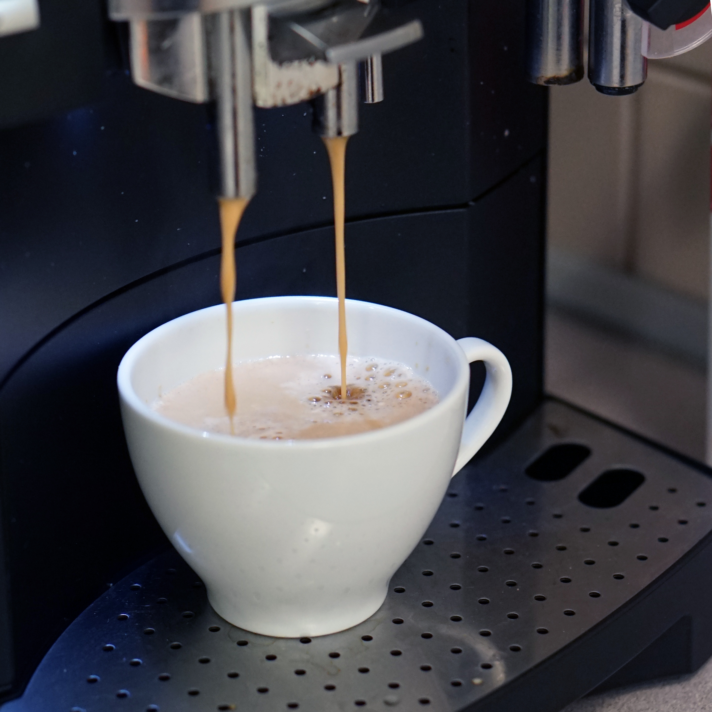

夏宝咖啡：养生咖啡引领品牌
夏宝咖啡面向中国内地市场，以谦卑感恩、卓越品质、诚信务实、创意无限作为品牌的核心价值，力求发展成为中国咖啡消费者最喜爱的、最具影响力的咖啡养生品牌。
懂得欣赏咖啡的人，才会懂得品味咖啡。正如热爱生活的人，才会懂得珍惜眼前的幸福。因为幸福就是沧桑历尽、苦尽甘来的心境。当咖啡已经成为一种生活的必需品，一种生理上的享受，一种精神上的愉快，用到一种时尚的追求时，这种位居世界三大饮料之列的，曾经充满着神秘色彩的饮料，不再是当年的奢华享受、更不再是某种“腐朽生活的象征”，它变得普通、寻常起来，平平静静地置身于我们繁复的生活中，默默地奉献着自己，隐藏了它的荣耀和辉煌，像我们生活中许许多多熟视无睹的东西一样，人们在享受它的醇厚、浓烈、馥郁的同时，已经无暇去顾及它的价值与作用。
夏宝咖啡是一家纯正的咖啡品牌，秉承“做一杯好咖啡”的企业原则，面向全国招代理商，一起传承咖啡文化。在夏宝咖啡配料中添加天然灵芝，为咖啡人无时无刻都能给你想要的那一杯“健康养生的咖啡”。
夏宝咖啡致力全面打造升级微研磨工艺，口感犹如现磨般纯粹，甄选来自马来西亚上等的本土的咖啡豆炼制而成，唯有倾注匠心才能缔造纯粹的咖啡，另特别添加勇健极品灵芝，将灵芝的苦味和咖啡特有的苦感作完美的结合。夏宝咖啡采用由椰子油提炼成的非乳脂(植物性)奶粉调配，不含“反式脂肪”。 夏宝咖啡缔造原原本本的馥郁口味咖啡只需一杯时间，让您随时随地置身咖啡馆，甄选马来西亚上等咖啡豆享誉全球的豆种，秉性醇厚，馥郁香浓，滑而不涩。全新升级“微研磨”工艺将咖啡豆研磨至微米级颗粒，充分萃取，醇香醇味，保留完整咖啡原香细腻多变，回甘明显。